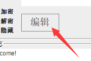

项目地址
Gitee：https://gitee.com/rmshadows/pencoder_cipher_encryptor
Github：https://github.com/rmshadows/PEncoder
使用说明文档
英文文档 - EN
PEncoder2.1
中文使用文档请见下方 或者 戳我 | 后面有演示视频
Info
Name : PEncoder
Current Version ：v2.1
Function : Help you manage your password.Based on java,using Swing-GUI;
Environment : Java 11 (Java8 is OK,delete module-info.java),!!Win10 1903 Above!!
Platform : Windows & Linux
Keys Length limit : <16
Password Length limit: <30
Compile
Compile:javac --module-source-path src -d bin -m cn.rmshadows.PEncoderModule -encoding UTF-8
Run:java -p bin -m cn.rmshadows.PEncoderModule/appLauncher.PEncoderGUILauncher
Jlink Pack:jlink --launcher StartPEncoder=cn.rmshadows.PEncoderModule/appLauncher.PEncoderGUILauncher --module-path bin --add-modules cn.rmshadows.PEncoderModule --output PEncoder2.0
！！This program may not work correctly on the version of win10 18XX.！！What cause this problem maybe notepad.exe.
Open CMD ,take a look at the first few lines, if it looks like this:1
2Microsoft Windows [版本 10.0.18363.836]
(c) 2019 Microsoft Corporation。保留所有权利。
Good,you’ll download archive file in RELEASE ,unzip it then run the ‘Start’ script to start the application.
1.If you download jar file:
- Windows:Double click or in command lines type
java -jar PEncoder.jar - Linux:
chmod +x PEncoder.jarthen./PEncoder.jarorjava -jar PEncoder.jar
2.If you download Jlink file,it’s easy: Choosing the correct archive for your platform.Then upzip it,and double click at the “Start” script to launcher the application.
Get start:
!————————————————————!
Before we getting start,you need to know:
PEncoderDatabasebak : PEncoderDatabasebak file is a passwords record file.It stored password by clear text.All practice(adding password ,export as csv file ,change password…) are based on it.Hereinafter we call it bak file.
PEncoderDatabase : PEncoderDatabase file is a coded passwords stored file.It derived from bak file. DO NOT MODIFY THIS FILE ! ! Otherwise all the password stored on the PEncoderDatabase file will be lost ! !Hereinafter we call it DB file.
!————————————————————!
- First time use : Launcher the application ,select “-菜单栏(menu bar)-文件(files)-新建(New PEncoderDatabasebak file)”.
Then you’ll see a new ‘PEncoderDatabasebak’ file has created.Click “-编辑-(Edit)” to modify the bak file ,it’ll automatically opened with ‘notepad.exe’ on Windows or ‘Gedit’ on Linux ,therefore make sure you had installed them.If you dont have one ,there is a way to solve this:
1.Modifying soure code ,change to the application you used to edit ‘txt’ file.
2.Find the bak file in your file explorer and open it with your favorite text editor.

-We go on:
Open the new bak file,delete the first line (使用前请删除此行，注意英文冒号的使用位置！格式示例：) .Follow the example in the second line:软件平台(Forum):账号名(User name):密码(Password):备注(Remarks).Using colon as the delimiter, each row is divided into four columns (therefore colons are not allowed in these three fields — Forum ,UserName ,Remarks.【Ps:There will be no semicolon “:” in the encrypted message ,so you don’t need to worry about the Password field.】Exceptions: Semicolon in Chinese (：) is OK in the three field mentioned above ,but not allowed in the Password field).Different colon:English colon(:),Chinese colon(：) ,others:such as en_us(,.:;’”[]?!),cn_zh(，。：；‘’“”、【】？！).
for example:
Correct: Github.com:username:password:my github account.site：www.github.com.
As you see ,I the final colon is Chinese colon,so that it’s correct.If you can’t type a Chinese colon “：”，just replace the English colon “:” in the ‘Forum’,’User Name’,’Remarks’ field with other symbol.
Wrong:Github:username:password:https://www.github.com The final “:” in the ‘Remarks’ field will confuse PEncoder and make it wrong !
How to encrypt password ?
First of all ,setup your KeyA & KeyB ,both two keys are using to encryption.
The most important thing is DO REMEMBER BOTH KAYA & KEYB! or you will lost all you encrypted password !!
That’s what you are using to decrypt and get the clear text of your password.
Now Let’s say that I am going to encrypt and stored information showed below on my win10 laptop :
| Forum | Username | Password | Remarks |
|---|---|---|---|
| Github | Tom | Tom’sGH | site:www.github.com |
| Kitty | pwd:666 | Null | |
| GoogleDrive | Woops@gmail.com | www;;??? | phone:+86-15525837262 |
Let’s make the KeyA:’shadows@shadows’ and KeyB:’Google0234’ ,typed into the corresponding text boxes.
Then click “-编辑-(Edit)” it will open with notepad and add our password in it:
1 | Github:Tom:Tom'sGH:site-www.github.com |
You don’t need to save the file right now,because our password hasn’t encrypted yet.To encrypt our password,shear the clear password text into “输入(Input)” text area,click “运行(Run)” .Now you can see the encrypted password in the “输出(Output)” area ,click “复制(Copy)” to copy to your clipboard，then ‘Ctrl+v’ paste it into bak file .When all the clear password text has been encrypted ,you can save the bak file now.
1 | Github:Tom:3281935691A4F06F75B80CE78854FBC0CEE353BA15898A648192B7365CFBAF0B:site-www.github.com |
You don’t want anyone to see your username and remarks ，just select “菜单栏（Menubar)-文件(File)-编码bak文件(Convert into DB file)” to generate a DB file.After a DB file is generated , don’t forget to delete or shred the bak file and store your DB file somewhere( DO NOT HAVE YOUR DB FILE AND PENCODER IN THE SAME FOLDER .DB FILE IS YOUR PASSWORD RECORD FILE!!You don’t leave your passwords around, do you?).
Important!!DO NOT MISPLACE OR MODIFY DB FILE!! or you will lost all your passwords encrypted byPEncoder.
When you open DB file with text editor:
==>DB file may not be compatible between Windows & Linux ,but bak file could be transmission between two platform(bak file coding:UTF-8).
When I forget my password ,How to retrieve my password or How should I change my password info?
First, put the DB file into the folder where PEncoder in. Run PEncoder enter the Keys you used to encrypt last time.Select “菜单栏(Menubar)-文件(File)-解码DB文件(Decoding DB file)” to convert DB file into bak file.Then make sure you are in the decryption mode(“解密(Decryption)”)【Default mode is encryption mode(“加密（Encryption）”).】.The “隐藏(Hidden)” button is used to hide the Keys.
Click “编辑(edit)” ,open bak file ,copy cipher to input area and run ,you will see your password in the Output area.
If you had changed your password ,just remove the old cipher.Set encryption mode “加密” on.Repeat what we did in last topic.Replace the old cipher with a new one.For example, my github password change to “asdf666”.
Now the bak file become this:1
2
3Github:Tom:F791B1EA02EBA137E2ADCCC525B1B6896FF23BD5D6A98392E3E574EFE35AEFBC:site-www.github.com
Facebook:Kitty:FDECC95D3217E2A538886B79EFA673E7C176F2BBB9FB5D3C2E4202AEF66C91CD:Null
GoogleDrive:Woops.com:43BF2DF98BF44651E436F2179A764F0DCA5E66353C7CFEEDFF9087293D9B9FB466C0B2A028542A5CC0737835F5E25B41:phone=+86-15525837262
When you had modified the bak file , remember to save and convert to DB file again.
How to export my password?
You can export your password-info from bak file by clear password text or cipher password text.Before export ,make sure your bak file existed.Select “菜单栏(Menubar)-选项(Options)-导出(Export)” ,you’ll see a dialog asks you to choose a export option to go on.Here we are going to talk about the export of clear password text.
Enter your Keys in,Select “菜单栏(Menubar)-选项(Options)-导出(Export)”
Choose “明文密码导出（Export as clear password text）”
Press Enter.If everything is ok ，you will see a CSV file had been generated.Open it with EXCEL:

You can see all your account information and statistics here.
and below is “密码密文导出(Export as cipher)”
==> On Windows CSV file coding by GB2312 ,Linux by UTF-8.If your CSV is garbled ,just make some changes on the source code or create a new xls file and import data in the CSV file you exported ,choose import coding “GB2312” and export coding “Your system coding(UTF-8? ASCII? ISO8859-1?)”.
How to change my Keys?
If you accidentally give away your encryption keys ,it’s easy to change you Keys.As usual, enter your old keys in the KeyA，KeyB area.Before Keys changing,MAKE SURE YOUR BAK FILE EXSITED! Then “菜单栏(Menubar)-选项(Options)-更换密钥(Change Keys)” ,enter your new Keys in the pop-up dialog separated by a slash “/“ (So that slashes are not allowed in the new keys!).
Assumption of New Keys are:
- KeyA:
hello - KeyB：
54321
Press Enter.A new bak file generated.This is in case of a typo.Open New bak file with text editor,try to decrypt your password with new Keys.If everything is OK ,delete old bak file,rename New bak file with “PEncoderDatabasebak” then closed and convert to DB file to stored your encrypted password info.
Other function
- Alway on top/Cancel on top.
- Right-click menu test
Thanks for watching
- By Ryan Yim 2020-06-24
中文文档 - ZH
PEncoder密码辅助
- 当前版本：2.1
介绍
Java Swing 密码辅助工具
使用略不方便，代码略乱，见谅。
编译
版本：Java 11
- 编译：
javac --module-source-path src -d bin -m cn.rmshadows.PEncoderModule -encoding UTF-8 - 运行：
java -p bin -m cn.rmshadows.PEncoderModule/appLauncher.PEncoderGUILauncher - 打包：
jlink --launcher StartPEncoder=cn.rmshadows.PEncoderModule/appLauncher.PEncoderGUILauncher --module-path bin --add-modules cn.rmshadows.PEncoderModule --output PEncoder2.0
使用说明
关于PEncoder2.0:
- *PEncoder用于密码加密;
- *PEncoder支持Windows、Linux
- *PEncoder版本:Java8+
- *PEncoder在Windows下要求系统版本在1903（可能是吧？？我猜的）以上，‘CMD’打开看看开头是不是写着
1 | Microsoft Windows [版本 10.0.18363.836] |
- 写着2019及以上可以用，写着2018的就用不了，因为格式会乱掉。
- *PEncoderDatabase是PEncoder的非直观数据记录文件，不可直接修改。
- *PEncoderDatabasebak文件是PEncoder的直观数据记录文件。用于用户自行添加、修
- *改密码帐号等信息。格式：“平台名称:用户名:密码:备注”（注意是英文格式的冒号！）
- *使用时请将需要的数据记录文件和PEncoder应用放在同一个目录下。
- *PEncoder使用的是UTF-8编码！
关于运行环境:
Windows和Linunx一样,安装JDK或者JRE都行,在Java官网可以下载。关于运行：
- 如果下载的是JAR文件：
Windows下，直接双击打开。或者cmd：
java -jar PEncoder.jar
- Linux下，先给予运行权限，在Terminal：
`sudo chmod +x PEncoder.jar` - 再运行:
./PEncoder.jar
使用方法
Get Start：
1、第一次使用：
从“-菜单栏-文件-新建-”一个PEncoderDatabasebak文件;
2、编辑PEncoderDatabasebak文件：
点击按钮“-编辑-”打开PEncoderDatabasebak文件（Windows下要求安装有Notepad.exe[记事本];
Linux下要求安装有Gedit[Gnome一般有自带]）。
格式示例：下面第三列（以冒号隔开算作一列）是我要加密的密码(1234567890、wodewangyiyun、skjbvinewir、rrrrrrrooo)
[一共四列，分别是：平台名称、用户名、密码和备注]
1 | 腾讯QQ:92463448:1234567890:腾讯QQ |
暂时不保存！因为我们的密码还没有加密（现在的密码都是明文密码）！
3、开始加密：
首先，PEncoder需要你提供两个密钥KeyA和KeyB。这两个密钥将用于加密和解密，所以务必牢记！
丢失这两个密钥你将解不开加密后的密码！
#注意！#
#KeyA和KeyB的要求是：
#（1）不允许携带中文特殊符号，例如："【"、"】"、"："、"；"等等。
#（2）长度均不超过16位;
在Key的输入框中输入KeyA和KeyB，假设咱们的KeyA是："shadows"，KeyB是："54321"。
[左下角的-隐藏-按钮允许你隐藏所输入的KeyA和KeyB]
接下来就可以开始加密了！
剪切需要加密的明文密码（如本例中第一个明文密码：1234567890）到"-输入-"的文本框中，然后点击运行。
[请确保左下角模式选择处于"-加密-"状态。]
#注意！#
#明文密码最长只支持30位，且不允许有特殊符号，例如："【"、"】"、"："、"；"等等，这些都符号是不允许的。#
运行后，"-输出-"文本框中将得到加密后的字符串，点击“-复制-”按钮，粘贴得到的加密字符串于刚才的PEncoderDatabasebak文件中。
如下图（用加密后的字符串代替原来的明文密码）：
1 | 腾讯QQ:92463448:2F24F3CF1AC52B36AED07B7A0E0737AAFA4BD25A5EE07059B451B0F637EDD05D:腾讯QQ |
用记事本或Gedit编辑后记得保存（UTF-8编码），然后关闭PEncoderDatabasebak文件。
这样你就的到了一份加密后的密码记录本。此时你可以将PEncoderDatabasebak文件保存在其他位置（至少和PEncoder分开存放，以确保别人
得到你的密码记录文件或者PEncoder后无从下手。）。
#注意#
#此时的PEncoderDatabasebak文件中除了密码，都是明文信息！#
如果你不想让人太轻松的看到你的用户名等信息，你可以使用“-菜单栏-文件-编码PEncoderDatabasebak文件-"进行简单的编码，这时会
生成一个PEncoderDatabase文件;
虽然PEncoderDatabase文件没法直接阅读，但是有经验的人依然可以读取出其中包含的内容。不过你莫要慌张，其中的加密过的密码信息
将很难被破解（除非他拥有KeyA和KeyB!!还有这个软件...）
下面是生成的PEncoderDatabase文件内容：
1 | 闽::: |
生成PEncoderDatabase文件后，你就可以删除PEncoderDatabasebak文件了。
也就是说，PEncoderDatabase文件和PEncoderDatabasebak文件你必须保存其中一个，来记录你加密后的密码信息（别闹，要不拿什么
来解密呢？）
记住！重要的几点：
！！务必牢记KeyA和KeyB密钥！！
！！PEncoderDatabasebak文件和PEncoderDatabase文件必须保存，记得和PEncoder分开存放！！
！！PEncoder所有的文件编码都是采用UTF-8！！
4、解密：
当你忘记密码，又想得到明文密码时。
你需要：将PEncoderDatabase或者PEncoderDatabasebak文件和PEncoder文件放在同一个目录下。
如果是PEncoderDatabase文件，请先打开PEncoder，点击”-菜单栏-文件-解码PEncoderDatabase文件-“这样你又的到了PEncoderData
basebak文件。
如果你保存的是PEncoderDatabasebak文件就不需要解码了。
直接点击”-编辑-“打开PEncoderDatabasebak文件。复制加密后的字符串，返回PEncoder界面，左下角模式选择“解密”。
粘贴你所复制的加密后的字符串到 “-输入-” 文本框中，点击”-运行-“，在”-输出-“文本框中你将会得到你所需要的明文密码。
查阅完密码后，记得删除PEncoderDatabasebak文件[PEncoderDatabase文件和PEncoderDatabasebak文件保留一个，保留其中一个
删除另一个!]。
#
￥ 如果明文密码信息改变了 ￥
你需要的是修改PEncoderDatabasebak中的第三列的信息;
比如：我要修改的是QQ密码，把原密码”1234567890“修改成“uuuu”。
1 | 腾讯QQ:92463448:2F24F3CF1AC52B36AED07B7A0E0737AAFA4BD25A5EE07059B451B0F637EDD05D:腾讯QQ |
首先执行加密步骤（见前文），输入之前用于加密的KeyA和KeyB，加密后得到：
C3A8767CA257691EA3863A7410692D1BB25C4D5F8D76D58A53BE61EC05254817
替换掉原先的密码位置，得到：
1 | 腾讯QQ:92463448:C3A8767CA257691EA3863A7410692D1BB25C4D5F8D76D58A53BE61EC05254817:腾讯QQ |
保存后，同理，可以编码成PEncoderDatabase文件进行保存。老规矩，保存其一，分开存放。
5、导出你的密码到CSV文件（你可以把它当作Excel表格）：
本功能用于统计你的用户，密码等信息。导出文件格式为CSV。
可以导出明文密码的CSV文件，也可以导出密文形式的文件，这个在对话框里的下拉框进行选择;
Windows下默认GB2312编码。Linux下默认UTF-8
#注意#
#如果导出的是UTF-8编码格式的CSV文件。在一些Windows电脑上出现中文乱码请参见下文-解决办法。#
#此功能要求PEncoderDatabasebak文件的存在！#
———>如果你导出的CSV文件在Windows下打开是乱码(一般Windows下默认导出GB2312,如果你导出的CSV文件没乱码，就不用关注这一部分了)，
则该CSV文件可能是UTF-8格式，所以请进行下列操作：
%解决办法%
在Windows下新建一个Excel表格[xls结尾的就行了，当然，xlsx也是没问题的。]，菜单栏点击“-数据-”，选择”-导入数据-“。
导入数据中选择，”-导入CSV文件-“，选择PEncoder导出的CSV文件后，选择编码：”UTF-8“。
导入后就能看到正常的中文啦（因为中文的Windows一般默认是GBK等等编码，而Linux默认UTF-8等等，不同的编码系统当然显示的不一样咯。
就像你拿ASCII编码的TXT文件用UTF-8编码打开乱码一样。）
6、更换密钥：
如果你不小心泄漏了你的KeyA和KeyB密钥的信息。又或许是其他原因，你想更换密钥，很简单。
#注意#
#此功能要求PEncoderDatabasebak文件存在！#
首先，你需要吧你原来的KeyA和KeyB输入在相应的文本框中【重要】
点击”-菜单栏-选项-更换密钥-“，出现了对话框，要求你输入新的Key。
新密钥的格式是：
新的KeyA/新的KeyB
“/”是分割符号，所以不允许/出现在密钥中！
假设我原来的Key是：
KeyA：shadows
KeyB：54321
我要修改成：
KeyA：133223
KeyB：1433223v
首先我应该把原先的Key输入在对应的KeyA和KeyB文本框中。
然后点击”-菜单栏-选项-更换密钥-“，出现了对话框。
我应该在弹出的对话框中输入：133223/1433223v
点击确认，他就生成一个新的PEncoderDatabasebak文件。名字是PEncoderDatabasebakNEW
为什么没有覆盖原PEncoderDatabasebak文件呢？因为怕新的密钥输入错误，比如不小心多输入了一个字符，手快不小心点到了确认。。拉闸
下面是新生成的PEncoderDatabasebak文件内容：
1 | 腾讯QQ:949330788:FF3FC9A049D8EB7E4D847053BD47D4D0123C156F3B2D83EDF7005DFDF0F65982:腾讯QQ |
接下来你懂的，确认无误就将原来的PEncoderDatabase和PEncoderDatabasebak文件删除。重命名新生成的PEncoderDatabasebakNEW
文件为PEncoderDatabasebak。
要编码成PEncoderDatabase文件取决于你自己。老规矩，保留一个，删掉另一个，和PEncoder应用程序分开保存。
7、关于帮助菜单中的，我觉得没必要说了，是个人都看的懂。哈哈哈哈哈哈哈
8、2.0版本更新日志：
%%%%%%%%%%%%%%%%%%%%%%%%%%%%%%%%%%%%%%%%%%%%%%%%%%%%%%%%%%
% 优化了CSV导出功能，Windows下采用GB2312编码导出，不再乱码。 %
% 新增了窗口置顶功能。 %
% 优化了PEncoderDatabase文件生成。 %
% 优化了用户输入框过滤规则。 %
%%%%%%%%%%%%%%%%%%%%%%%%%%%%%%%%%%%%%%%%%%%%%%%%%%%%%%%%%%
That‘s all
祝大家生活愉快！
by Ryan 2020-06-20
关于
这个嘞，是自己写的第一个Java窗口应用。毕竟咱也不是计算机专业…敲代码为的是方便生活。我密码太多了，全是长密码，一个平台一个不同长密码。我记不住那么多密码，于是我就写了这个小东西辅助我管理密码。因为能力有限（喵喵叹气，咳咳），各位如果想改进下可以自己把源代码拉过去修改，我就不更新啦！如果觉得不好用（那肯定，这么麻烦的东西。市场上那些密码记录软件他不香吗？），也就看看作罢，图个娱乐。
写这个小东东之前，也用过别人写的小玩意儿。比如加密猫[项目地址 > https://github.com/Corydonbyte/jiamimao ]。个人觉得还是有点好用的
吧。或许加密猫和 Hat.sh [项目地址 > https://github.com/sh-dv/hat.sh ]有点关系(猜的)，因为加密猫加密后的文件头部好像就带有Hat.sh的字样，界面也差不多。不管怎样，还是带着一颗感谢的心，毕竟方便了大噶的生活、提升了办公效率，这都是好事儿。
项目地址：> https://gitee.com/rmshadows/pencoder_cipher_encryptor <
截屏
许可
演示视频 - Video
If you like this blog or find it useful for you, you are welcome to comment on it. You are also welcome to share this blog, so that more people can participate in it. If the images used in the blog infringe your copyright, please contact the author to delete them. Thank you !